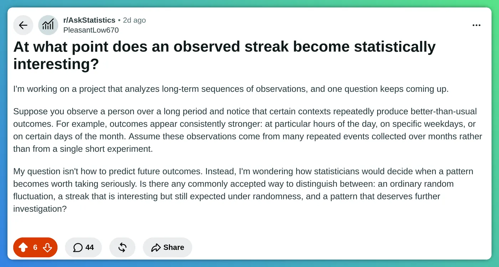

Cette série chanceuse est-elle réelle - ou avez-vous simplement assez cherché ?
Une vraie question venue du terrain, traitée comme le ferait un biostatisticien. Le piège qui la sous-tend est celui qui saborde aussi, en silence, les analyses en sous-groupes des essais cliniques.
Venu du terrain : r/AskStatistics
Supposons que vous observiez une personne sur une longue période et remarquiez que certains contextes produisent régulièrement des résultats meilleurs que d'habitude - à certaines heures, certains jours de la semaine ou certains jours du mois, sur des mois d'événements répétés. Ma question n'est pas comment prédire les résultats futurs. C'est comment les statisticiens décident qu'un motif mérite d'être pris au sérieux. Existe-t-il une façon communément admise de distinguer une simple fluctuation aléatoire, une série intéressante mais encore attendue sous l'effet du hasard, et un motif qui mérite une investigation ?

☝ Avant de poursuivre : comment y répondriez-vous ? Choisissez la réponse la plus proche de la vôtre - puis voyez ce qu'elle vaut.
Le diagnostic express
La question demande quand la preuve d'un contexte chanceux devient assez forte. C'est la mauvaise question. Avec ce dispositif, vous ne mesurez pas si un motif est réel - vous mesurez à quel point vous avez cherché. Scanner des dizaines de contextes temporels, revérifier à mesure que les données s'accumulent, et couronner le meilleur après coup : c'est une machine à transformer du pur bruit en chance « significative ».
- Chercher partout. 24 heures + 7 jours de semaine + 31 jours du mois = 62 contextes testés d'un coup. Au seuil habituel de 5 %, le pur hasard seul en produit environ 3 « significatifs ».
- Regarder en continu. Retester à mesure que les données s'accumulent finit forcément par franchir n'importe quel seuil fixe, même quand il n'y a rien.
- Choisir le gagnant. Choisir le meilleur contexte après avoir vu les données garantit qu'il décevra à la période suivante - simple régression vers la moyenne.
La vraie question n'est donc pas « quand la preuve est-elle assez forte ? » mais « mon meilleur contexte est-il plus fort que ce que le hasard produirait sur 62 essais - et tient-il sur des données nouvelles ? »
Pourquoi cela trompe aussi les gens prudents
L'instinct - « collecter plus de données jusqu'à ce que le motif soit indéniable » - semble rigoureux et est exactement à l'envers. Plus de données ne vous sauve pas ici, car le problème n'est pas la taille d'échantillon d'un contexte donné ; c'est le nombre de contextes et la liberté de choisir le meilleur.
Même forme à l'hôpital chaque jour : beaucoup de patients, beaucoup de valeurs de laboratoire, vérifiées encore et encore. Surveillez assez de cadrans assez longtemps et certains s'alarmeront sans raison - c'est en partie ainsi qu' une alarme de sepsis qui criait au loup a fini ignorée par les cliniciens mêmes pour qui elle avait été conçue.
Que faire concrètement : un plan en 5 étapes
C'est l'approche disciplinée la plus simple. Chaque étape est d'abord en clair, avec les maths et les chiffres à un clic.
1Comptez combien de motifs vous pouviez trouver
Avant de tester quoi que ce soit, listez chaque contexte scanné - y compris ceux que vous avez survolés puis abandonnés. Heures, jours de semaine, jours du mois : 24 + 7 + 31 = 62. Regardez des combinaisons (« vendredi soir ») et vous passez aux centaines.
Le chiffre qui compte
Appelez-le m, le nombre de tests. À un seuil de 5 %, le nombre attendu de fausses alertes est m fois 0,05. Pour m = 62 cela fait environ 3 - trouver trois contextes « chanceux » est donc exactement ce que produit le bruit. Compter les tests jamais formellement menés (le jardin aux sentiers qui bifurquent) est la partie difficile et honnête.
2Donnez un score à chaque contexte
Pour chaque contexte, transformez le résultat moyen en score z : à combien d'erreurs-types au-dessus de « aucun effet » il se situe. Sous l'hypothèse nulle d'absence de chance, le z de chaque contexte se comporte comme un tirage d'une courbe en cloche standard. Disons que votre meilleur contexte atteint z = 2,6 - une valeur p brute proche de 0,005, impressionnante face à 0,05.
La formule
Pour un contexte de score moyen x-barre sur n observations et de dispersion s :
Plus d'observations réduit le dénominateur, donc le même avantage réel apparaît comme un z plus grand. C'est le fond de vérité de « collecter plus de données » - mais cela ne change rien aux 62 regards de l'étape suivante.
D'où viennent les chiffres : trois exemples détaillés
Trois petits jeux de données, trois formes de données - et la même recette à chaque fois : (moyenne observée − moyenne attendue sans chance), divisé par l'erreur-type.
Pour chaque jeu de données, on suit le chemin qu'un analyste suivrait au clavier : regarder quelques lignes brutes, vérifier la cohérence du fichier entier, grouper par contexte, puis transformer chaque groupe en un z. Les lignes surlignées sont les chiffres que la suite de la page réutilise.
Exemple 1 - un score continu avec une attente connue. Six mois du journal de loteries simulées de l'auteur : 1 800 lignes, une par tirage, avec les colonnes date, heure, jour de semaine et score - le résultat déjà normalisé par rapport à l'attente connue du jeu, si bien que « pas de chance » signifie un score moyen de 0, les tirages individuels se dispersant avec s = 1. Contexte à tester : « les mardis », soit n = 260 tirages de moyenne x-barre = +0,16. Erreur-type = s/√n = 1/√260 ≈ 0,062, donc z = 0,16/0,062 ≈ 2,6 - le z que nous suivons sur toute cette page.
À quoi ressemble le journal - les premières lignes du fichier :
| date | heure | jour | score |
|---|---|---|---|
| 2026-01-05 | 09:00 | lun. | −0,42 |
| 2026-01-05 | 14:00 | lun. | +1,13 |
| 2026-01-06 | 10:00 | mar. | +0,77 |
| 2026-01-06 | 15:00 | mar. | −0,08 |
| 2026-01-07 | 11:00 | mer. | +0,31 |
| … 1 795 autres lignes | |||
Micro-EDA avant toute chasse aux motifs : la moyenne des 1 800 scores vaut +0,004 avec une dispersion de 1,00 - la normalisation se comporte bien, et une colonne de score cassée se verrait ici même. Groupez maintenant par jour de semaine et résumez chaque groupe : combien de tirages il contient, leur moyenne, et cette moyenne divisée par sa propre erreur-type :
| jour | n | moyenne | z |
|---|---|---|---|
| lun. | 258 | −0,03 | −0,5 |
| mar. | 260 | +0,16 | +2,6 |
| mer. | 255 | +0,05 | +0,8 |
| jeu. | 259 | −0,11 | −1,8 |
| ven. | 254 | +0,02 | +0,3 |
| sam. | 257 | −0,07 | −1,1 |
| dim. | 257 | +0,01 | +0,2 |
Six jours flottent là où vit le bruit ; le mardi dépasse à z = 2,6. Répétez le même groupé-résumé pour les 24 heures et les 31 jours du mois, et vous tenez les 62 z - la colonne que jugeront les étapes 3 à 5.
Exemple 2 - des issues gagné/perdu. Un jeu où chaque essai gagne avec une probabilité connue de 20 % - l'attente est connue par construction, comme dans les simulations de loterie de l'auteur. 2 100 lignes : horodatage, heure, gain (1 ou 0). Contexte : « l'heure de 15 h », avec n = 150 essais et 41 gains - un taux de 27,3 % contre 20 % attendus. Pour une proportion, l'erreur-type vaut √(p(1−p)/n) avec p le taux attendu : √(0,20 × 0,80/150) ≈ 0,033, donc z = (0,273 − 0,200)/0,033 ≈ 2,2. Même recette - seule la formule de l'erreur-type change avec le type de données.
Le journal brut :
| horodatage | heure | gain |
|---|---|---|
| 2026-02-03 15:12 | 15 | 1 |
| 2026-02-03 18:40 | 18 | 0 |
| 2026-02-04 11:05 | 11 | 0 |
| … 2 097 autres lignes | ||
Micro-EDA : 424 gains sur 2 100 essais - un taux global de 20,2 %, pile sur les 20 % prévus par construction : le jeu est équitable dans l'ensemble, et toute chance éventuelle doit se cacher dans les tranches. Notez les tailles inégales des groupes : les essais se concentrent aux heures de veille, si bien que les heures chargées contiennent environ 150 essais et les heures matinales bien moins - c'est précisément pourquoi le résumé garde n visible. Groupez par heure :
| heure | n | gains | taux | z |
|---|---|---|---|---|
| 09:00 | 138 | 26 | 18,8 % | −0,3 |
| 12:00 | 142 | 30 | 21,1 % | +0,3 |
| 15:00 | 150 | 41 | 27,3 % | +2,2 |
| 18:00 | 147 | 27 | 18,4 % | −0,5 |
| 21:00 | 131 | 28 | 21,4 % | +0,4 |
| … 19 autres heures | ||||
Seule 15 h sort du lot - et tout le reste de cette page sert à décider si même cela vaut quelque chose.
Exemple 3 - des auto-évaluations rares. Le second flux de l'auteur : 400 soirées d'auto-évaluation, colonnes date et note - −1 (pire que d'habitude), 0 (comme attendu), +1 (mieux). Ici, aucune attente externe n'existe : « pas de chance » est la moyenne de long terme de la personne elle-même - soustrayez-la d'abord ; disons que les notes centrées se dispersent avec s = 0,75. Contexte : « le 13 du mois » - seulement n = 13 soirées, mais de moyenne x-barre = +0,31, et on jurerait que « le 13 est mon jour ». Erreur-type = 0,75/√13 ≈ 0,21, donc z = 0,31/0,21 ≈ 1,5. La leçon : un contexte rare a un n minuscule, donc même une moyenne impressionnante reste confortablement dans le bruit - et c'est avant la correction des 62 contextes.
Le journal brut :
| date | note |
|---|---|
| 2026-03-05 | +1 |
| 2026-03-06 | 0 |
| 2026-03-07 | −1 |
| … 397 autres lignes | |
Micro-EDA : les 400 notes se répartissent en 118 × (−1), 172 × 0 et 110 × (+1) - moyenne globale −0,02, dispersion s = 0,75. Aucune attente par construction ici : ce −0,02 est la ligne de base propre de la personne - soustrayez-le de tout avant de comparer les contextes, sinon un évaluateur globalement morose ou enjoué fabrique un signal dans chaque tranche. Groupez par jour du mois :
| jour du mois | n | moyenne centrée | z |
|---|---|---|---|
| 3 | 13 | −0,12 | −0,6 |
| 8 | 14 | +0,06 | +0,3 |
| 13 | 13 | +0,31 | +1,5 |
| 21 | 13 | +0,17 | +0,8 |
| 27 | 13 | −0,23 | −1,1 |
| … 26 autres jours | |||
Regardez ce que cette table enseigne discrètement : avec n autour de 13 par jour, les moyennes centrées oscillent entre −0,23 et +0,31 alors que rien de réel ne se passe nulle part - les jours du mois pris un à un sont simplement aussi bruyants que cela. Le +0,31 du 13 paraît beaucoup ; z = 1,5 dit qu'une moyenne de 13 soirées vagabonde jusque-là couramment.
Quelle que soit la forme des données, les trois mêmes ingrédients : une moyenne observée, la moyenne attendue sans chance, et une erreur-type qui rétrécit comme la racine carrée de n. C'est ce z que jugent les étapes 3 à 5.
Toute la procédure en une ligne, applicable à n'importe quel journal : groupez les lignes par contexte ; comptez n et moyennez chaque groupe ; soustrayez la moyenne sans chance ; divisez par l'erreur-type (s/√n pour des scores, √(p(1−p)/n) pour gagné/perdu) - et vous tenez un z par contexte. Si vos données peuvent produire des tables comme celles ci-dessus, vous pouvez dérouler vous-même chaque étape de cette page.
3Simulez le plafond de la pure chance
C'est le cœur du sujet - et le simulateur ci-dessous le fait en direct. Mélangez à quelle heure et quel jour appartient chaque résultat (cela casse tout lien temporel réel mais conserve la forme des données), recalculez les 62 contextes, et notez le meilleur z. Répétez des milliers de fois, et vous obtenez la distribution du « plus chanceux des 62 contextes sous pur bruit ». Comparez-y votre vrai meilleur.
Les chiffres, et le raccourci rapide
Pour 62 contextes, le meilleur-des-62 z sous pur bruit a une médiane proche de 2,3 et un 95e centile proche de 3,1. Votre 2,6 se situe vers le 75e centile - le bruit l'égale ou le dépasse environ une fois sur quatre. Pas intéressant. La ligne « ça vaut un coup d'œil » est vers z = 3,1. Raccourci sans simulation : Bonferroni demande à chaque contexte de franchir 0,05 divisé par 62, environ 0,0008 (z au-dessus de 3,2) - votre 2,6 échoue. Si vous préférez cribler de nombreux candidats plutôt que faire une affirmation ferme, contrôlez plutôt le taux de fausses découvertes (Benjamini-Hochberg). Passage à l'échelle médicale : les études du génome testent environ un million de sites et utilisent un seuil de 5 sur 100 millions.
Est-ce un bootstrap ?
Un cousin proche, mais non. Le bootstrap rééchantillonne vos données avec remise pour demander « de combien mon estimation vacillerait-elle dans un nouvel échantillon du même monde ? » - il mesure l'incertitude autour d'une valeur. Ce que fait l'étape 3 est un test de permutation : mélanger les étiquettes temporelles sans remise pour construire le monde où la chance n'existe certainement pas, puis voir où votre résultat réel s'y place. Et prendre le meilleur des 62 contextes à chaque mélange est le schéma classique max-T (Westfall-Young) - il traite la multiplicité plus honnêtement que Bonferroni, car les mélanges respectent d'eux-mêmes le chevauchement des contextes (le même tirage siège à la fois dans « mardi » et dans « 15 h »), là où Bonferroni sur-corrige.
Et oui - le verdict ne demande aucune table de la courbe en cloche : vous vérifiez simplement si votre vrai meilleur tombe dans la queue des 5 % supérieurs de la distribution mélangée (unilatérale, car « chanceux » est une affirmation directionnelle). Un seul écueil empêche d'abandonner le score z : les contextes ont des tailles très différentes, et leurs moyennes brutes ne sont pas comparables entre elles. Reprenez les deux contextes de l'étape 2. « Les mardis » contiennent n = 260 tirages : leur moyenne vacille avec une erreur-type d'environ 0,062 - sous pur bruit, elle reste grosso modo à ±0,12 de zéro (deux erreurs-types). « Le 13 du mois » ne contient que n = 13 soirées, erreur-type d'environ 0,21 - une moyenne environ 3,4 fois plus bruyante, que le même pur hasard balance régulièrement jusqu'à ±0,4. Classez les contextes par moyenne brute et les contextes rares gagnent presque chaque mélange, simplement parce qu'ils sont plus bruyants - vos mardis à 260 tirages ne pourront jamais « sur-vaciller » un contexte de 13 soirées, aussi réel que soit leur avantage. Diviser chaque moyenne par sa propre erreur-type (c'est tout ce qu'est le score z) met tous les contextes sur une même règle : une unité de z coûte alors la même dose de surprise partout, et le maximum devient un concours équitable. Toute statistique ayant cette propriété convient - y compris le p de permutation propre à chaque contexte (la variante min-p).
En toute transparence : le simulateur ci-dessous tire des z indépendants d'une courbe en cloche au lieu de mélanger un vrai jeu de données - la bonne simplification pour une leçon. Sur vos propres données, la vraie permutation est strictement meilleure : elle hérite gratuitement de vos distributions biscornues et des dépendances entre contextes.
4Confirmez sur des données non utilisées pour le trouver
La plus importante, et la frontière entre « intéressant » et « réel ». Le motif repéré est une hypothèse, pas une preuve. Figez le contexte survivant comme une seule affirmation nommée d'avance, puis testez uniquement ce contexte sur la seconde moitié de votre historique - ou, mieux, sur de nouvelles observations à venir - à un simple 5 %.
Pourquoi cela règle presque tout
À l'étape de confirmation, il n'y a plus de multiplicité - vous testez une chose nommée d'avance, donc un simple 5 % redevient honnête. C'est aussi ce qui bat le regard continu et la régression vers la moyenne d'un seul coup : un hasard trouvé en cherchant partout ne se répétera pas sur des données qu'il n'a jamais touchées. S'il se reproduit, il mérite une étude ; s'il s'évapore, c'était du bruit depuis le début. Préenregistrer l'hypothèse, ou un plan en N-de-1, formalise la même idée.
5Demandez à quel point, pas seulement s'il existe
Rapportez la taille de l'avantage et son intervalle de confiance, pas seulement une valeur p. Sur des mois de données, même un effet microscopique devient « significatif » - significatif et digne d'action ne sont donc pas la même chose.
Essayez : le simulateur « chercher partout »
Réglez combien de contextes vous scannez, combien d'observations chacun contient, et à quel point votre meilleur paraît fort. Le graphique montre 4 000 tirages de pur bruit - la distribution du contexte le plus chanceux quand rien de réel ne se passe. Voyez où tombe votre résultat.
Une subtilité à noter : augmentez les observations et, à avantage moyen constant, le résultat devient à juste titre plus impressionnant - un effet réel peut franchir même la barre relevée, avec assez de données. Le hic : un motif né du bruit ne gardera pas sa moyenne - elle fond vers zéro à mesure que les observations s'accumulent. Prolonger la même exploration ne tranche jamais - c'est pourquoi les données nouvelles (étape 4) sont l'arbitre.
Les trois cas, tranchés
Deux d'entre eux sont construits plutôt que promis dans notre série Monte-Carlo - les plans séquentiels, calibrés par simulation où le geste même de cette page - simuler l'hypothèse nulle et prendre le quantile du maximum - revient pour régler pour de bon le problème du regard répété.
Questions fréquentes
Quand une série devient-elle statistiquement significative ?
Il n'existe pas de quantité fixe de données qui transforme une série en vrai signal. Si vous scannez de nombreux contextes (heures, jours de la semaine, jours du mois), le pur hasard garantit que certains paraîtront significatifs. La significativité d'un contexte choisi à la main ne veut rien dire tant que vous n'avez pas corrigé le nombre de motifs testés et confirmé le gagnant sur des données non utilisées pour le trouver.
Qu'est-ce que le problème des comparaisons multiples ?
Quand vous menez de nombreux tests à la fois, chacun a sa propre chance de faux positif. Tester 62 contextes au seuil de 5 % produit environ trois résultats significatifs par pur bruit. Des corrections comme Bonferroni ou le taux de fausses découvertes maintiennent le taux global de faux positifs sous contrôle.
Comment distinguer un vrai motif d'un bruit aléatoire ?
Comptez combien de motifs vous avez testés, réduisez votre seuil ou simulez le meilleur résultat que le pur bruit produirait sur autant d'essais, puis confirmez tout motif survivant sur des données nouvelles. Un motif qui franchit le plafond du bruit et se reproduit hors échantillon mérite investigation ; sinon, c'est de la régression vers la moyenne.
Sources
- ISIS-2 Collaborative Group, The Lancet, 1988 - l'essai dont les auteurs ont mené exprès l'analyse en sous-groupes astrologiques.
- r/AskStatistics - le fil d'origine sur lequel ce cas est construit.
- xkcd 882, “Significant” - la version « bonbons verts » du même piège.
Des pièges comme celui-ci forment toute une section de Stat Exam Pro - des QCM type examen, corrigés et expliqués, en français et en anglais.
Télécharger sur iPhone